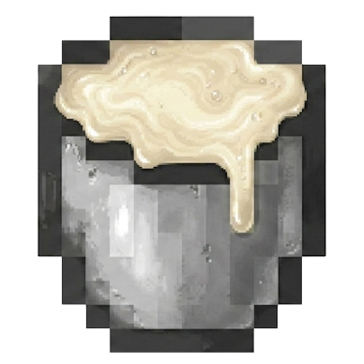
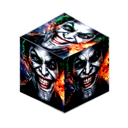
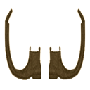

Дойкабыка и разорителя
У коров появился пол. Какой именно, выясняется только под ведром: половина стада даёт молоко, другая половина — совсем не молоко. Тем же ведром можно навсегда успокоить разорителя, а если постричь быка, начинается пасхалка, которая заканчивается испанскими сапогами.
Выгон
Пустое ведро в основной руке и клик по корове. Если пол ещё не назначен, мод бросает монетку и записывает результат в корову навсегда. Корова даёт обычное ведро молока, бык — ведро спермы и меняет морду на улыбающуюся. Ножницы работают только на быках, меч — чтобы посмотреть, что с кого падает.
Корова и три быка
Бык — та же ванильная корова, только с другой текстурой. Ножницы стригут его один раз: с шансом 50% бык становится лысым и роняет 1–2 кожи, иначе превращается в медного. Оба варианта больше не стригутся и при смерти не дают кожи.
Разоритель
Кликни по разорителю пустым ведром. В инвентарь падает ведро спермы, а у зверя стираются все цели ИИ, включая поиск жертвы. Вместо них ставятся четыре мирных: не тонуть, бродить на скорости 0.4, смотреть на игрока в радиусе 6 блоков и оглядываться. Меняется и текстура.
До дойки
После
Сделать это можно только один раз. Повторный клик по ручному разорителю ничего не даёт, ведро остаётся пустым.
Ведро спермы


- 0–1.6 с пьёшь 32 тика, как молоко. Еда 0, насыщение 0, но пить можно и сытым
- сразу отравление I и слепота I на 2 секунды, пустое ведро возвращается в руку
- +2 с одно случайное из четырёх: прыгучесть, спешка, скорость или «Герой деревни», все I уровня на 5 секунд
Медный бык
Медный бык — античное орудие казни, испанский сапог — средневековое. В моде из первого делают второе. Постриженный в медь бык при смерти роняет 1–3 медной шерсти, из четырёх шерстинок крафтятся испанские сапоги. Бегать в них вдвое быстрее, но каждые 10 секунд они отнимают полсердца.




Медная шерсть
Блок-шерсть с Джокером на всех гранях. Тяни куб, чтобы покрутить.
Верстак
Нужно 4 медной шерсти. Добыть: выгон → ножницы по быку → меч.
Сапоги не надеты: обычная скорость, обычный обзор.
Тонкости
Достижения
Версии
Сначала ведро.
Потом разберёмся, кто это был